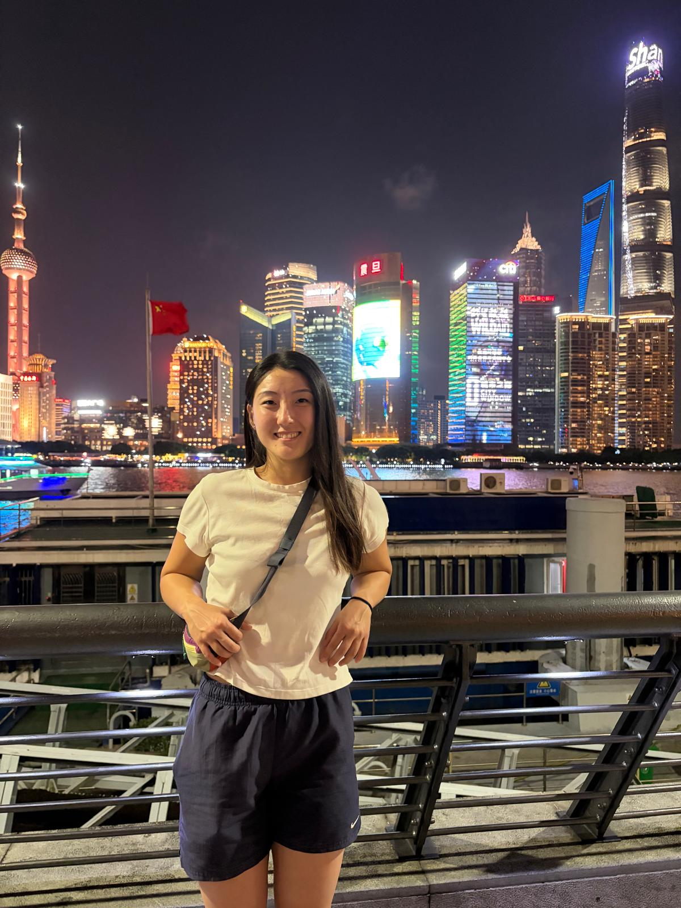
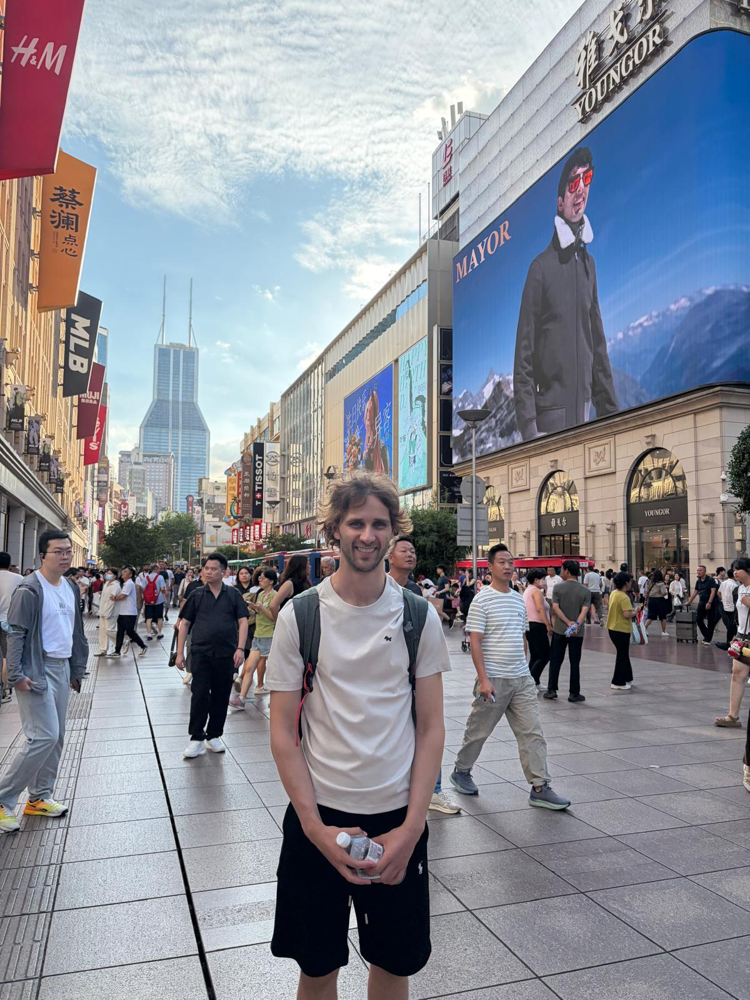
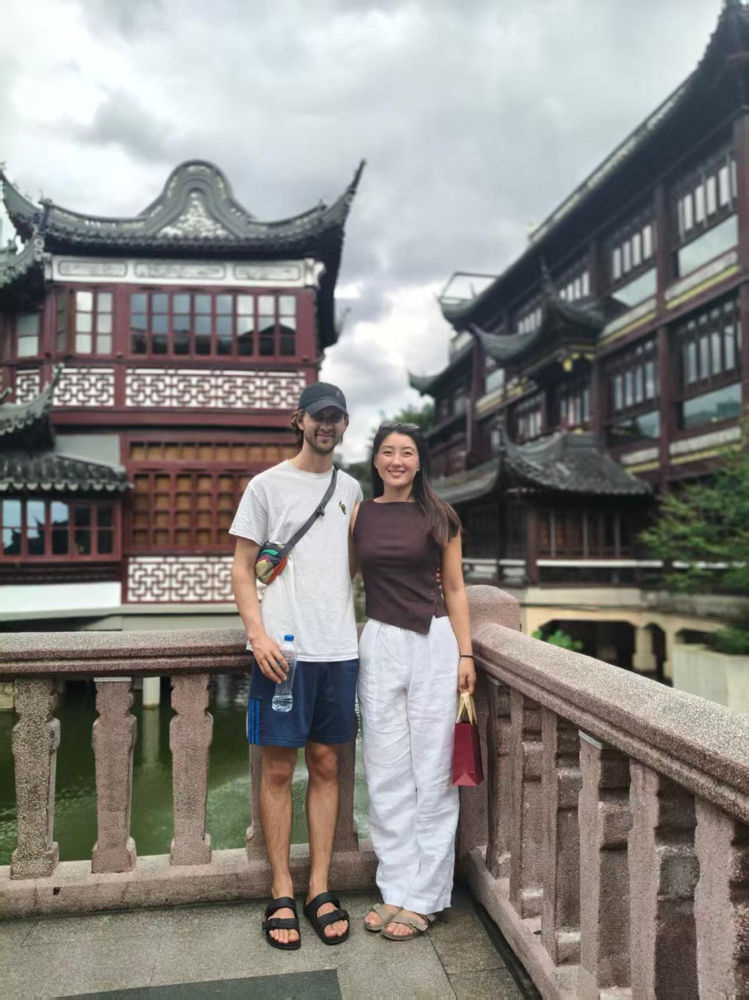
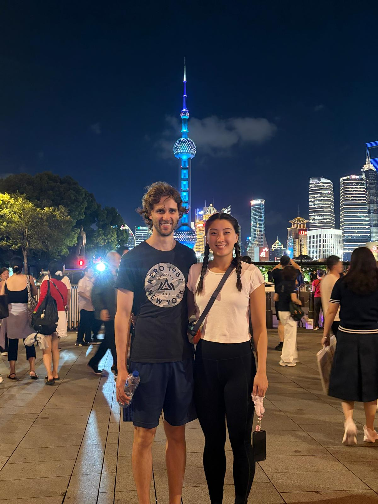
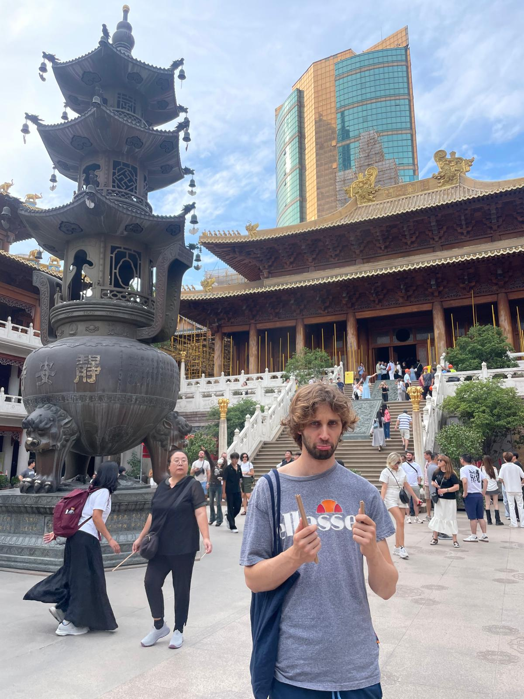

← Travel
Shanghai 2026
Sophie and I left London for the last time and headed to China to experience what East Asia had to offer.

4th September 2026
We took a direct flight from London to Shanghai, arriving in Pudong Airport. We were super excited but unfortunately our luggage had been delayed because of disruptions at heathrow. So, wearing the clothes on our back, we braved the humid air and some jet lag. We arrived at the hotel and were immediately astounded by an autonomous delivery robot who was very polite! We went to buy some extra clothes and get some food. At night we went to Yu garden and had our first experience along the Bund. The scale of high rises and lighting displays was staggering.

5th September 2026
In the morning we met up with Sophie's aunties! We took a day trip to Zhujiajiao. We took a boat ride through the ancient waterways and wandered the traditional streets. I loved trying some of the traditional food such as sea snails. We also went to get our ears professionally cleaned, I couldn't believe how much ear wax we both had in our ears! We ended up in the shopping district of Najing road.

6th September 2026
Sophie's mum finally arrived! We got foot massages in the morning which felt a little strange. We also met up with Sophie's cousin Bei Bei. She took us back to Yu Garden which, although was busy, was even more beautiful in the day. We did some gold shopping and walked through some lesser known markets eventually buying some silk scarves. In the evening we had a big group dinner with a ton of Shanghainese food!

7th September 2026
We went to the salon to get my very long hair washed. I actually enjoyed the experience even though having a stranger touching my head was odd. We then went to see Sophie's grandparents appartment where Sophie had spent some time as a kid. It was up a ton of stairs but was so central! We passed by markets on the way there to buy some sunflower seeds and chicken feet. We went back to the Bund in the evening and got a great view of the sky tower from a bridge off the beaten path.

15th September 2026
We were back in Shanghai!!! Jing'an Temple was our destination where we burned sticks and made wishes as we watched people throw coins into the wishing well. We went to a fancy lunch with the extended family and Sophie and I got a ride with Sophie's uncle on his three wheeled vehicle! It was super fast and airy! We also had dinner with Shandy's dad and took a stroll through the Bund. It marked the end of our stay in China, we were super sad to go!